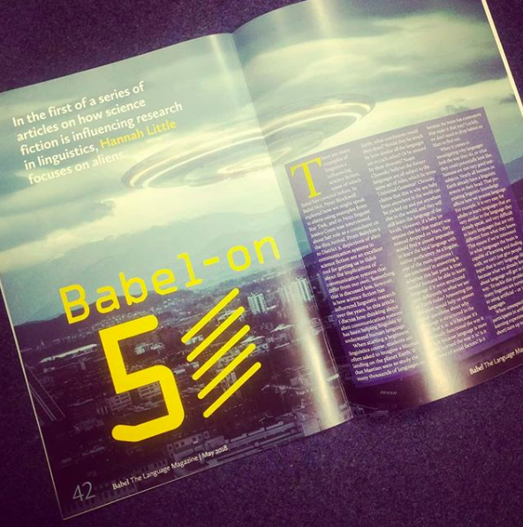
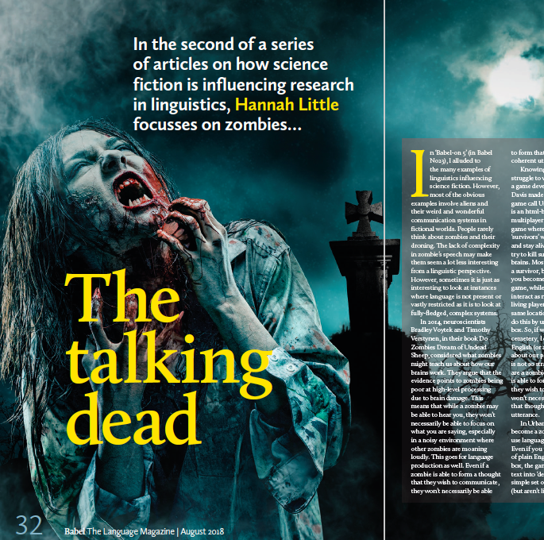
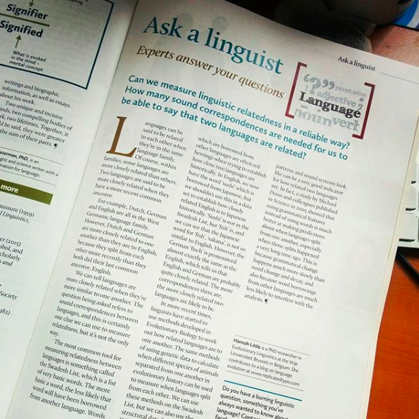
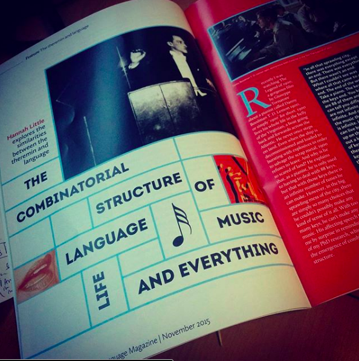
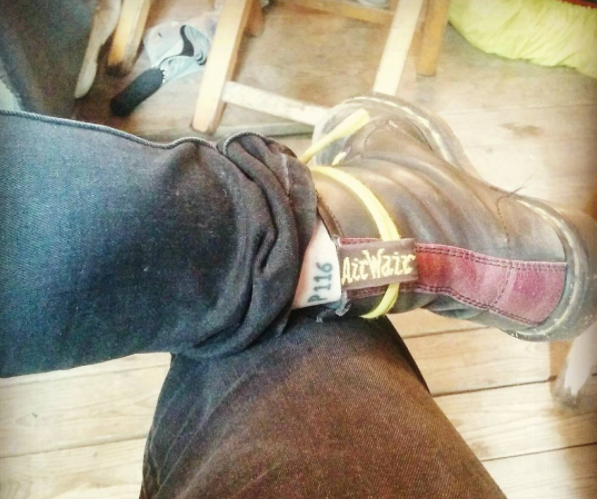

Pop Linguistics Articles

Babel on 5. The first in my series on how SciFi has influenced linguistic research.

The Talking Dead. The second in my series on how SciFi has influenced linguistic research.

Linguistic X-Men. The third in my series on how SciFi has influenced linguistic research.

Text Machina. The forth in my series on how SciFi has influenced linguistic research.

One time I was the linguist on the "ask a linguist!" page.

A cover feature about the experiements I did in my PhD.
Academic Publications
Publications with a icon are linked and open access from this webpage.
Edited Books
2018 Cuskley, C., Flaherty, M., Little, H., McCrohon, L., Ravignani, A. & Verhoef, T. (Eds.): The Evolution of Language: Proceedings of the 12th International Conference (EVOLANGXII).
Edited Issues/Proceedings
2018 Little, Hannah & Ashley Micklos (Eds.). The proceedings of the EVOLANG XII Modality Matters Workshop.
2017 Little, Hannah (Ed.). Special Issue on the Emergence of Sound Systems. The Journal of Language Evolution, 2(1).
2015 Little, Hannah (Ed.). The Evolution of Phonetic Capabilities: Causes, Constraints, Consequences.
Journal Articles
2019 Motamedi, Yasamin, Hannah Little, Alan Nielsen and Justin Sulik. The iconicity toolbox: empirical approaches to measuring iconicity. Language and Cognition. doi: 10.1017/langcog.2019.14
2018 Perlman, Marcus, Hannah Little, Bill Thompson and Robin L. Thompson. Iconicity in Signed and Spoken Vocabulary: A Comparison between American Sign Language, British Sign Language, English, and Spanish. Frontiers in Psychology. doi: 10.3389/fpsyg.2018.01433
2017 Little, Hannah. Introduction to the Special Issue on the Emergence of Sound Systems. The Journal of Language Evolution 2(1) 1-3. doi: 10.1093/jole/lzx014
2017 Little, Hannah, Kerem Eryilmaz and Bart de Boer. Signal dimensionality and the emergence of combinatorial structure. Cognition 168 1-15. doi: 10.1016/j.cognition.2017.06.011
2017 Little, Hannah, Kerem Eryilmaz and Bart de Boer. Conventionalisation and Discrimination as Competing Pressures on Continuous Speech-like Signals. Interaction Studies, 18(3). 355 – 378. doi: 10.1075/is.18.3.04lit
2017 Little, Hannah, Heikki Rasilo, Sabine van der Ham and Kerem Eryilmaz. Empirical approaches for investigating the origins of structure in speech. Interaction Studies, 18(3). 332 – 354. doi: 10.1075/is.18.3.03lit
2016 Eryilmaz, Kerem and Hannah Little. Using Leap Motion to investigate the emergence of structure in speech and language. Behavior Research Methods. 49(5) 1748–1768. doi:10.3758/s13428-016-0818-x
Published Reports
2019 Sardo, Margarida, Hannah Little, and Laura Fogg-Rogers. Evaluation of the Royal Institution Christmas Lectures – Final Report. Science Communication Unit, University of the West of England, Bristol.
Conference Proceedings
2019 Little, Hannah and Emma Weitkamp. "The rise of Science Comedy: Comparing shows at science and arts festivals." 12th Forum Wissenschaftskommunikation 2019. Essen, Germany.
2019 Little, Hannah and Clare Wilkinson. "The Great Escape: Exploring ‘Escape Rooms’ as science communication interventions." Science in Public. Manchester, UK.
2018 Little, Hannah. "Modality effects on the emergence of structure in communication." The proceedings of The Third Conference of the International Association for Cognitive Semiotics. Toronto, Canada.
2018 Perlman, Marcus, Hannah Little and Robin L. Thompson. "Comparing Iconicity in Signed and Spoken Vocabulary." The proceedings of The Third Conference of the International Association for Cognitive Semiotics. Toronto, Canada.
2018 Perlman, Marcus, Hannah Little and Robin L. Thompson. "Iconicity in signed and spoken lexicons: implications for language evolution." In Little, H. & Micklos, A. (Eds.): The proceedings of the EVOLANG XII Modality Matters Workshop.
2018 Little, Hannah and Justin Sulik. "What do iconicity judgements really mean?" In Cuskley, C., Flaherty, M., Little, H., McCrohon, L., Ravignani, A. & Verhoef, T. (Eds.): The Evolution of Language: Proceedings of the 12th International Conference (EVOLANGXII). Toruń, Poland.
2018 Roberts, Sean, Ashley Micklos, Justin Sulik and Hannah Little. "Innovation, selection and the emergence of transparent signals in interaction." In Cuskley, C., Flaherty, M., Little, H., McCrohon, L., Ravignani, A. & Verhoef, T. (Eds.): The Evolution of Language: Proceedings of the 12th International Conference (EVOLANGXII). Toruń, Poland.
2017 Little, Hannah, Marcus Perlman and Kerem Eryilmaz. "Repeated Interactions Can Lead to More Iconic Signals". In G. Gunzelmann, A. Howes, T. Tenbrink, & E. Davelaar (Eds.) Proceedings of the 39th Annual Conference of the Cognitive Science Society (pp. 760–766). Austin, TX: Cognitive Science Society
2017 Perlman, Marcus, Hannah Little and Robin L. Thompson. "Modality driven encoding of iconicity in signed and spoken vocabulary: A Comparison between British Sign Language and English". Types of iconicity in language use, development and processing. MPI, Nijmegen, the Netherlands.
2017 Little, Hannah and Marcus Perlman. "The transition from iconic signals to arbitrary signs depends on modality" In: Proceedings of the 11th International Symposium on Iconicity in Language and Literature. pp 117-119. Brighton, UK.
2017 Little, Hannah. "Causes for the inverse relationship between iconicity and phonological structure " In: Proceedings of the 11th International Symposium on Iconicity in Language and Literature. pp 37-39. Brighton, UK.
2017 Little, Hannah, Kerem Eryilmaz and Bart de Boer. "Conventionalisation and Discrimination as Competing Pressures on Continuous Speech-like Signals." CogLing7: Seventh biennial conference of BeNeCLA, the Belgian-Netherlandic affiliate organization of the International Cognitive Linguistics Association (ICLA). Nijmegen, The Netherlands.
2016 Little, Hannah and Bart de Boer. "Did the pressure for discrimination trigger the emergence of combinatorial structure?" In: Proceedings of the Second Conference of the International Association for Cognitive Semiotics. pp. 109 - 110. Lublin, Poland.
2016
Wilson, Jack J. and Hannah Little. "A Neo-Peircean Framework for Experimental Semiotics." In: Proceedings of the Second Conference of the International Association for Cognitive Semiotics. pp. 171 - 173. Lublin, Poland.
2016 Little, Hannah. "Nahran Bhannamz: Language Evolution in an Online Zombie Apocalypse Game." In: Createvolang: creativity and innovation in language evolution. New Orleans, USA.
2016 Little, Hannah, Kerem Eryilmaz and Bart de Boer. "Differing signal-meaning dimensionalities facilitates the emergence of structure." In S.G. Roberts, C. Cuskley, L. McCrohon, L. Barceló-Coblijn, O. Feher & T. Verhoef (eds.) The Evolution of Language: Proceedings of the 11th international conference (EvoLangXI). pp. 182-190. New Orleans, USA.
2016 Little, Hannah, Kerem Eryilmaz and Bart de Boer. "Emergence of Signal Structure: Effects of Duration Constraints." In S.G. Roberts, C. Cuskley, L. McCrohon, L. Barceló-Coblijn, O. Feher & T. Verhoef (eds.) The Evolution of Language: Proceedings of the 11th international conference (EvoLangXI). pp. 468-470. New Orleans, USA.
2016 Eryilmaz, Kerem, Hannah Little and Bart de Boer. "Using HMMs to Attribute Structure to Artificial Languages." In In S.G. Roberts, C. Cuskley, L. McCrohon, L. Barceló-Coblijn, O. Feher & T. Verhoef (eds.) The Evolution of Language: Proceedings of the 11th international conference (EvoLangXI). pp. 407-410. New Orleans, USA.
2015 Little, Hannah, Kerem Eryilmaz and Bart de Boer. "Linguistic Modality Affects the Creation of Structure and Iconicity in Signals." In D. C. Noelle, R. Dale, A. S. Warlaumont, J. Yoshimi, T. Matlock, C. D. Jennings, & P. P. Maglio (Eds.), Proceedings of the 37th Annual Conference of the Cognitive Science Society (pp. 1392-1398). Austin, TX: Cognitive Science Society.
2015 Little, Hannah, Kerem Eryilmaz and Bart de Boer. "A new artificial signal-space proxy for investigating the emergence of structure and categories in speech." In The Scottish Consortium for ICPhS 2015 (Ed.), Proceedings of the 18th International Congress of Phonetic Sciences. Glasgow, UK: the University of Glasgow. Paper number 31.
2014 Little, Hannah and Catriona Silvey. "Interpreting emerging structures: the interdependence of combinatoriality and compositionality." In: The Proceedings of the First Conference of the International Association for Cognitive Semiotics (IACS 2014). pp 113-114. 25-27 September, 2014. Lund, Sweden.
2014 Little, Hannah and Bart de Boer. "The effect of size of articulation space on the emergence of combinatorial structure". In: Erica A. Cartmill, Seán Roberts, Heidi Lyn & Hannah Cornish, ed., The Evolution of Language: Proceedings of the 10th international conference (EvoLangX). pp. 479-481. 14-17 April, 2014. Vienna, Austria.
2014 Little, Hannah and Kerem Eryilmaz "The effect of physical articulation constraints on the emergence of combinatorial structure". In: Bart de Boer & Tessa Verhoef, ed., The proceedings of the EVOLANG X Workshop on evolution of signals, speech and signs. pp.11-17. 14th April, 2014. Vienna, Austria.
2013 Wilson, Jack, J. and Hannah Little. "Emerging languages in Esoteric and Exoteric Niches: evidence from Rural Sign Languages". In: Ways to Potolanguage 3 book of abstracts. pp. 54-55. 25-26 May, 2013. Wroclaw, Poland.
2012 Littauer, Richard, James Winters, Seán G. Roberts, Hannah Little, Michael Pleyer and Bill Benzon. "Academic Research in the Blogosphere: Adapting to new opportunities and risks on the internet". In: Jan Christoph Meister, ed., Digital Humanities 2012 Conference Abstracts, pp. 268 -269. 16 -22 July, 2012. Hamburg: Hamburg University Press.
2012 Little, Hannah "The Role of Foreigner-Directed Speech in Language Evolution". Poster Presentation. European Human Behaviour and Evolution Association Annual Meeting 2012 Poster Abstracts, pp. 7. 25-28 March, 2012. Durham, UK.
Book Chapters/Volume Contributions
2014 Littauer, Richard, Seán G. Roberts, James Winters, Rachael Bailes, Michael Pleyer and Hannah Little. "From the Savannah to the Cloud: Blogging Evolutionary Linguistics research". In: Luke McCrohon, Bill Thompson, Tessa Verhoef & Hajime Yamauchi, ed., The Past, Present and Future of Language Evolution Research. pp 121-133. 17th March, 2014.
Theses
2017 Little, Hannah. "It's not all in your mind: Modality effects on the Emergence of Combinatorial Structure". PhD dissertation. Vrije Universiteit Brussel.
2011 Little, Hannah. "Foreigner Directed Speech:
Its role in Cultural Transmission of Language & the resulting effects on Language Typology". MSc dissertation. The University of Edinburgh.
2010 Little, Hannah. "Morphosyntactic Unification of Case Markers and Postpositions in Hungarian". BA dissertation. The University of York.
Book Reviews
2016 Little, Hannah. Review of Ljiljana Progovac: Evolutionary Syntax. Oxford: Oxford University Press, 2015. Linguist List 27(3298)
2014 Little, Hannah. Review of Denis Bouchard: The Nature and Origin of Language. Oxford: Oxford University Press, 2013. Linguist List 25(4460)
Other Presentations
2017 Sulik, Justin, Ashley Micklos and Hannah Little. "Interaction drives the evolution of informative signals theme session". "Proceedings of the Inaugural Cultural Evolution Society Conference. Jena, Germany.
2017 Little, Hannah. "Interaction, Perspective Taking and the Emergence of Transparency." Proceedings of the Inaugural Cultural Evolution Society Conference. Jena, Germany.
2016 Little, Hannah. "It's not all in your Mind: Modality Effects on the Emergence of Combinatorial Structure." Colloquium - Diversity in Language, Culture and Cognition. Max Plank Institute for Psycholinguistics. 8 December." Nijmegen, The Netherlands.
2016 Little, Hannah, Kerem Eryilmaz and Bart de Boer. "The effects of Communication on Iconicity in Continuous Speech-like Signals." Psycholinguistics in Flanders. Antwerp, Belgium
2015 van der Ham, Sabine, Hannah Little, Kerem Eryilmaz and Bart de Boer. "Experimental Evidence on the Emergence of Phonological Structure." In: The 13th International Cognitive Linguistics Conference Theme Session Abstracts. pp. 44. 20-25 July 2015. Newcastle, UK.
2015 Little, Hannah. "An extheremental investigation into modality and the emergence of structure." Invited guest lecture. LEC Talk. 17 March 2015, Language Evolution and Compution Unit at the University of Edinburgh, UK.
2014 Little, Hannah. "Experiments in the Emergence of Combinatorial Structure: Considering the Limitations of Articulation Space Proxies". Poster presentation. Nijmegen Lectures. 28 January 2014. Nijmegen, Netherlands.
2013 Wilson, Jack, J. and Hannah Little. "From Pragmatics to etymology: Evidence from Rural Sign Languages". Oral presentation. Language at Leeds PGR Group. 28 November 2013. Leeds, UK.
2013 Little, Hannah and Sabine van der Ham. "The challenges of investigating the emergence of speech with artificial language learning experiments". Oral presentation. Experimental Linguistics Talks Utrecht. 15th April 2013. Utrecht, Netherlands.
2011 Little, Hannah "The Role of Foreigner Directed Speech in the Cultural Transmission of Language & the resulting effects on Language Typology". Poster Presentation. 30th Language at Edinburgh Lunch. 1st December 2011. Edinburgh, UK.
Bonus for scrolling through everything
Here's a publication-themed tattoo on my ankle.
P116 is the library of congress classification number for the Evolution of Language.